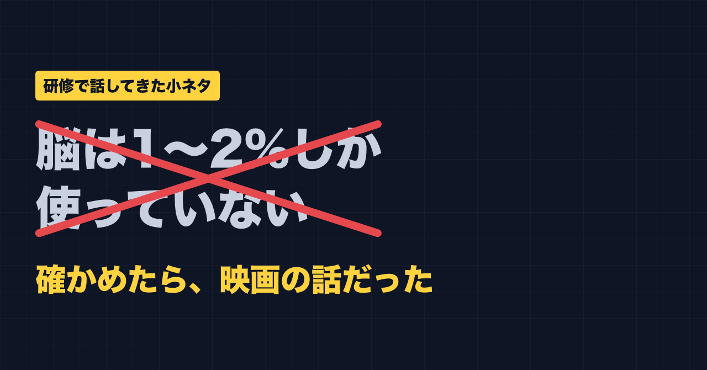
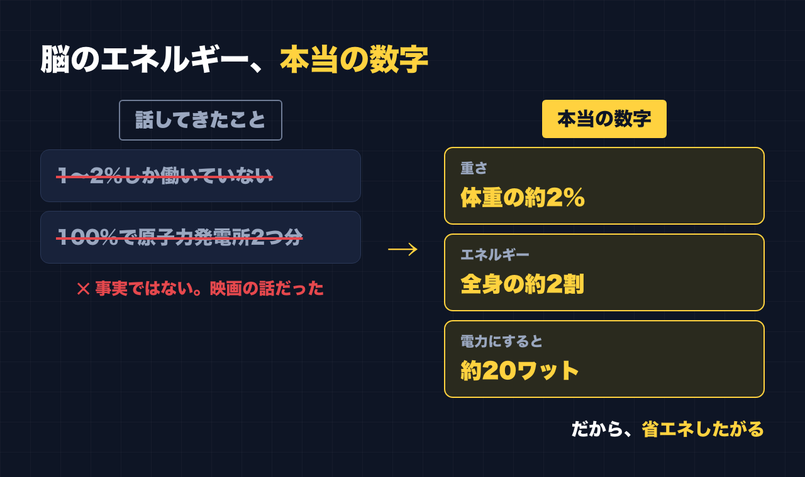

1. タイトルをコピーして、note のタイトル欄に貼る
2. 「本文1をコピー」から順にコピーし、note の本文に貼る
3. 青いラベルの位置に、images フォルダの同じ名前の画像を入れる（本文には貼られません）
※ 見出しが普通の文字になった場合は、その行を選んで「大見出し」を設定してください

「脳って、普段は1〜2%しか働いていないんです。もし100%動いたら、原子力発電所2つ分のエネルギーになるそうですよ」
私は仕事で、人に教える側に立つことがあります。研修で話すとき、この話をずっと使ってきました。
映画『LUCY』みたいに、脳がフルに動いたら超能力だって出るかもしれない。そんなふうに、少し盛り上げるための小ネタとして。
私自身、本気で信じていました。
でも最近、AI と壁打ちをしていてこの話をしたら、「それは事実ではありません」と言われました。自分でも確かめてみると、映画の話でした。
「脳は少ししか使っていない」は、事実ではない
「人は脳の10%しか使っていない」という話は、昔から広まっている通説です。私が話していた「1〜2%」も、その仲間です。
でも、これは事実ではありません。脳の大部分を眠らせたまま使っていない、ということはないそうです。
映画『LUCY』は、まさにこの通説をもとにした話でした。映画として楽しむ分には面白いのですが、研修で「本当の話」として話すものではありませんでした。
正しい数字は「体重の約2%、エネルギーの約2割」
では、脳のエネルギーについて、本当はどうなのか。調べて分かったのは、こういう数字です。
- 脳の重さは、体重の約2%
- なのに、体全体が使うエネルギーの約2割を使っている
- 電力に直すと、だいたい20ワットくらい
原子力発電所2つ分どころか、桁がまったく違います。
ただ、ここで面白いと思ったのは、「体重の2%しかないのに、エネルギーの2割を使う」ところです。脳は、体の中でかなりの大食いなんです。

それでも「脳は省エネしたがる」の話は使える
研修では、この脳の話のあとに、もうひとつ話していることがあります。
「脳は省エネしたがる。聞いたことがある話、見たことがある気がする話だと、『もう知ってる』とサボる。だから、確認するときはその性質を知っておいてほしい」
脳の数字は間違っていました。でも、この話の本筋は変えなくていいと思っています。
むしろ、正しい数字のほうが説明しやすくなりました。体重の2%で、エネルギーの2割を使う大食いの臓器だからこそ、できるだけ手を抜きたがる。私はそう考えると筋が通ると思っています。
そして何より、私自身がその見本でした。
「脳は1〜2%しか使っていない」は、どこかで何度も聞いたことのある話でした。聞いたことがあるから、疑わずに話していた。確かめないまま、人の前で話していました。
「聞いたことがある話ほど、確認をサボる」を、自分でやっていたわけです。
副業の情報や講座を見るときにも、同じことが起きる
これは研修の中だけの話ではありません。副業の情報を見るときも、同じだと思っています。
- 「この方法なら、誰でもすぐ稼げる」
- 「みんなやっている」
- 「あの人も言っていた」
こういう話は、何度も目にするうちに「聞いたことがある」になります。聞いたことがあると、なんとなく本当っぽく感じる。そこで確認をサボる。
私はいろんな講座にお金を払ってきました。最初に入った講座は約80万円で、成果は出ませんでした。副業の情報も講座も、「聞いたことがある」だけで判断しないようにしたい。これは自分への言い聞かせでもあります。
確認するときに、私が気をつけたいこと
大げさな方法ではありません。聞いたことがある話ほど、次の3つを自分に聞くようにしたい、というだけです。
- それ、元はどこ？：誰が言い出したのか、元の情報までたどれるか
- 数字は本当？：数字が出てきたら、その数字だけ別で調べてみる
- 「聞いたことある」だけで信じていない？：何度も聞いた、は本当の理由にならない
私の脳の話も、「原子力発電所2つ分」という数字だけでも一度調べていれば、すぐに気づけたはずでした。
AI に聞くときも同じです。AI はもっともらしい間違いを書くことがあります。先日、動画で見た「Claude Code に入れるべき7つ」を入れたときも、先に AI に「公式で実在するか確かめて」と頼んでから入れました。
最後に
人に教える側が、間違ったことを話していた。これも、私の失敗談のひとつです。
でもこれで、「聞いたことがある話ほど確認をサボる」という話を、自分の失敗つきで話せるようになりました。
ここからは宣伝です。
公式LINEでは、「特典」と送っていただくと、LINE限定のプロンプト5本をお届けしています。
https://lin.ee/RzyA13P
「副業ドラフト」は、AI の質問に答えるだけで、副業に使える強みの棚卸しと Threads の下書きを作るツールです。Threads の下書き3本までは無料で使えます。
https://note-threadssf.onrender.com
Threads では、こうした試行錯誤を日々発信しています。
https://www.threads.com/@shachiku_mao
最後まで読んでいただき、ありがとうございました。